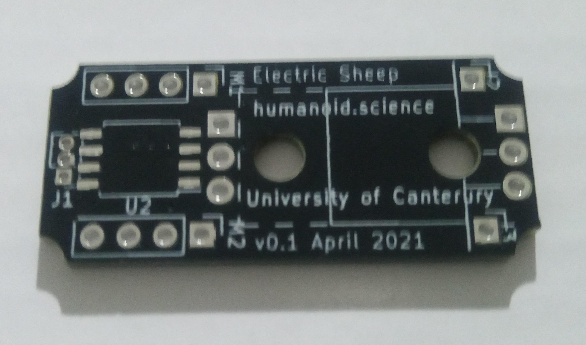
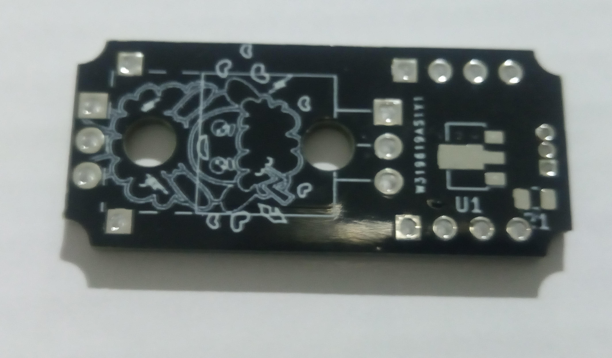

This update is a continuation of the PWM motor project. The goal of the project is to create a new controller board for standard PWM motors that add advanced capabilities and increased motor torque.
Some PCBs finally arrived! Here are some images (apologies for the potato camera pictures):
Front of the PCB
The boards look really nice and came out exactly as planned. They even fit the motor housing nicely with the rounded corners avoiding the screws well.
Back of the PCB
An initial review of the board:
The 3-pin connector will be very tough to solder, it was difficult to see on the schematic how tight the tolerances would be. Even the smallest amount of solder that goes somewhere it should will cause a short on those pins. Still, we will see how easily I can solder it.
The traces are really not that large at all, we will for sure need to test how much current they can carry. This will mean testing a board to destruction.
We are on the very edge of how close the through-holes can be to the edge of the PCB. This of course raises questions about where a programming header could possibly be attached.
We still await for some circuit components to arrive, so until then we can do current tests and ensure the board is wired up correctly. Stay tuned for future updates!